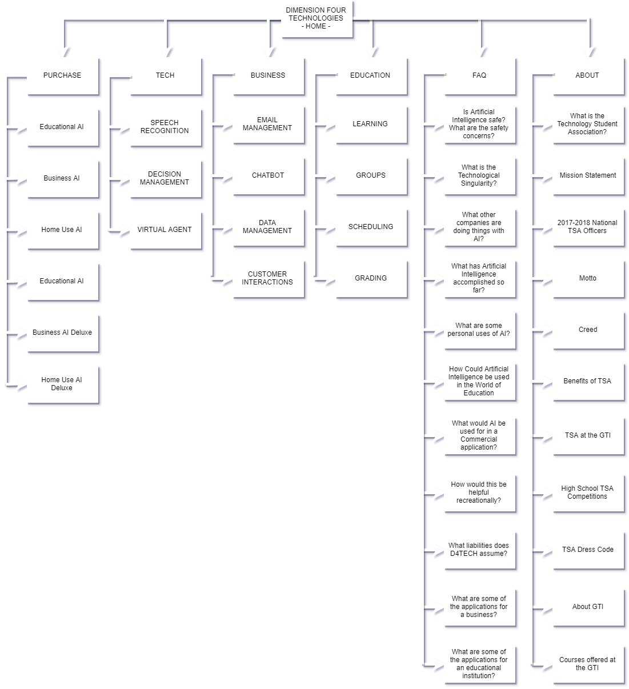

"The Technology Student Association (TSA) is a national, non-profit organization of middle and high school students who are engaged in science, technology, engineering, and mathematics (STEM). Since TSA was chartered in 1978, almost 4,000,000 student members have participated through challenging competitions, leadership opportunities, and community service." ~From the TSA website
The Technology Student Association enhances personal development, leadership, and career opportunities in STEM, whereby members apply and integrate these concepts through intracurricular activities, competitions, and related programs.
President
Ms. Aala Nasir
National TSA President
Deep Run High School
Glen Allen, VA
Vice President

Ms. Jessica Strait
National TSA Vice President
Abingdon High School
Abingdon, VA
Secretary
Ms. Shanda Manasco
National TSA Secretary
Jemison High School
Jemison, AL
Treasurer

Mr. Simon Jolly
National TSA Treasurer
Hardin Valley Academy
Knoxville, TN
Reporter
Mr. Yoshi Torralva
National TSA Reporter
Braden River High School
Bradenton, Florida
Sergeant-at-Arms

Mr. Preston Crawford
National TSA Sergeant-at-Arms
Lowndes High School
Valdosta, GA
Learning to lead in a technical world.
I believe that Technology Education holds an important place in my life in the technical world. I believe there is a need for the development of good attitudes concerning work, tools, materials, experimentation, and processes of industry. Guided by my teachers, artisans from industry, and my own initiative, I will strive to do my best in making my school, community, state, and nation better places in which to live. I will accept the responsibilities that are mine. I will accept the theories that are supported by proper evidence. I will explore on my own for safer, more effective methods of working and living. I will strive to develop a cooperative attitude and will exercise tact and respect for other individuals. Through the work of my hands and mind, I will express my ideas to the best of my ability. I will make it my goal to do better each day the task before me, and to be steadfast in my belief in my God, and my fellow Americans.
Advisors
We try to expand beyond TSA to help other people compete, problem solve, and learn about different areas of technology. We especially have focused on assisting the Freedom of Technology Club with their projects.
We are still a fairly new TSA chapterm so we are still figuring out what the best form of organization is for us. Our particular chapter is in a unique situation. Students from all over the Granite School District are bussed from their home schools to the Granite Technical Institute building. Students stay for two class periods, then are returned to their home schools. This setup has been highly beneficial to the students affected, however, it does make it difficult to organize and have meetings that everyone can participate in. We do not currently have officers. We are considering having four representatives, one chosen from each 2 period class block that will report to our advisors and help distribute information to our members.
"We're kind of a flag for all schools." ~Anthony Byrom
At the begining of this year we had an assembly where we featured each of the different clubs housed at the GTI, which has greatly increased participation.
Participants demonstrate their knowledge of 3D animation technology and design skills to creatively solve the challenge posted on the national TSA website.
Participants select a contemporary biotechnology problem and demonstrate understanding of it through documented research, the development of a solution, a display (including an optional model or prototype), and an effective multimedia presentation.
Participants develop a public service announcement and a digital video (with sound) that focuses on the given year’s theme.
Participants produce an original musical piece that is designed to be played during the national TSA conference opening or closing general sessions.
Participants develop a game that focuses on the subject of their choice. The game must have high artistic, educational, and social value and be interesting, exciting, visually appealing, and intellectually challenging.
Participants design, build, and launch a website that features the school’s career and technology/engineering program, the TSA chapter, and the chapter’s ability to research and present a given topic pertaining to technology. Semifinalists participate in an on-site interview to demonstrate the knowledge and expertise gained during the development of the website.
SHOW MORE
SHOW LESS
Official TSA Attire (most formal)
Professional TSA Attire (less formal)
Business Casual TSA Attire (least formal)
Videos provided by The Granite Technical Institute
The mission of the Granite Technical Institute is to support students in finding personal purpose, potential and a pathway to their future. This is accomplished by helping students achieve in their program and to move seamlessly to further training and employment. Efforts are being made to directly align critical academic subjects with career and technical education courses, thus promoting real-world application to academic theory in such areas as mathematics, science and English. In addition, articulation and collaboration with Salt Lake Community College and other post-secondary institutions is being enhanced in order to make the transition to further education easier for students. Clear pathways of training have been designed to support student growth from the 9th through the 12th grades.
The Department of Career and Technical Education in Granite School District has a well-earned reputation for providing high- quality programs that are targeted at high-demand industries. To further this focus, The Granite Technical Institute offers courses in Health Science & Technology, Engineering, Information Technology, Biotechnology/Biomanufacturing, Culinary Arts, Aviation, Agriculture, Cosmetology/Barbering, and Home Building/Construction.
In order to register for any of the classes offered through the Granite Technical Institute, students must first pick up an application in the Career Center of their high school or click on the link below. Once the application is complete and signed by both the student and their guardian, it should be returned to the Career Center for review and approval by the Career Center Coordinator. The Career Center Coordinator will then help the student determine whether or not additional information is required and will help facilitate the scheduling process.
Transportation (bus) will be provided for students twice daily from the student’s home high school to the GTI. All courses listed in the catalog will be taught at the Granite Technical Institute (2500 South State Street) unless otherwise specified. This schedule is designed to accommodate the two-period block enrollments. Students interested in registering for these courses should see the Career Center Coordinator at their high school. Questions regarding the Granite Technical Institute can be directed to our front office at 385-646-4350
2500 S. State Street Salt Lake City, Utah 84115
Attendance Office: (385)-646-4350
Main Office: (385)-646-4350
Fax: (385)-646-4347
Office Hours: Monday-Friday 7:00 a.m. – 3:00 p.m.
Contact Us: Lbfraser@graniteschools.org
You will Learn:
• How to design
• Steps to obtaining building permits
• Steps to developing a site
• Subcontracting
• How to read blueprints
• Basic construction safety
Hands-on construction of a house which involves:
• Footings
• Framing
• Roofing
• Sheetrocking
• Finish carpentry
• Painting
• Concrete finishing
• Tile work
• Interior hardware
• Soffitt and fascia
You will Learn:
• Soar through the digital sky of Precision Simulation
• Dissect the heart of an aircraft
• X-cellerate throught the ages of history
• Propel your future through air transportation
Note:
You can earn 14 credits towards
your Flight Technology Degree before
you graduate from high school and
save around $1,500 in tuition.
Cool things you will do:
• Copy your own DNA
• Explore careers in biotechnology
• Design your own experiments
• Make glowing bacteria
• Learn how to use lab equipment
• Run DNA fingerprint “CSI” gels
• Purify proteins
• Compete in HOSA events
Pathway Opportunities:
• BTEC 1020, the biotech internship course at SLCC/GTI
• Biotech Product Design and Bioengineering courses
also offered at the GTI
• Biotechnology AS degree at SLCC
This semester course is an introduction to Computer Programming using C#. Students will learn programming concepts that will provide a strong base for taking other programming classes. Students will be able to solve problems and enhance their skills by learning an object-oriented programming language. Students will learn C# syntax, graphical user interface (GUI), program control and data structures. Upon completion of this course, students can advance to Computer Programming 2 with experience in design, coding and testing of their own computer programs.
Cool things you will do:
• Design and conduct your own experiments
• Make your own ecosystem in a fish tank
• Grow plants without soil
• Make wormy soil
• Grow plants with wormy soil
• Compete in FFA
Pathway Opportunities:
• Aquaculture and Biotechnology courses
• Animal, Plant, and Vet Science courses
• Concurrent credit
• Summer high school credit
Students who desire an introduction to web development pages using HTML, XHTML, Dynamic HTML, tables, frames, input forms and cascading style sheets. Prior web development is not a requirement for this course. During the successful completion of class assignments students will build their own personal websites and maintain their on-going structure and design changes.
SHOW MORE
SHOW LESS
DIMENSION FOUR TECHNOLOGIES SITE MAP
